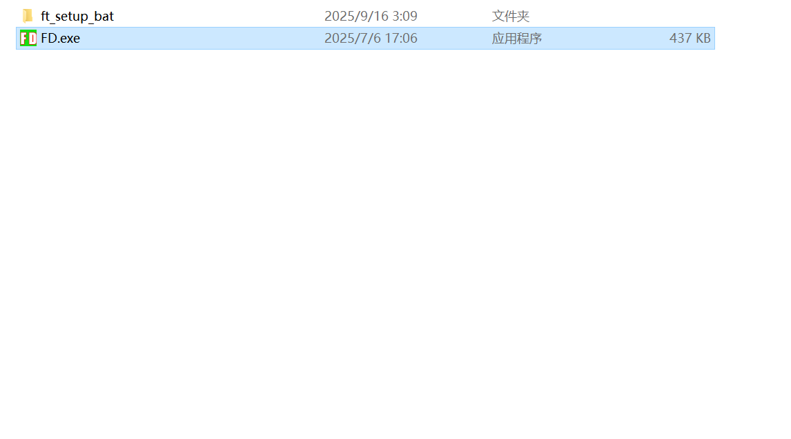
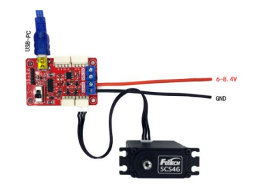
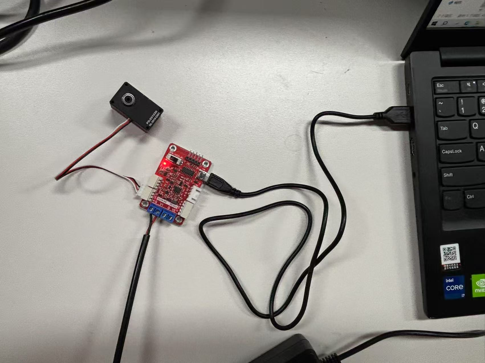
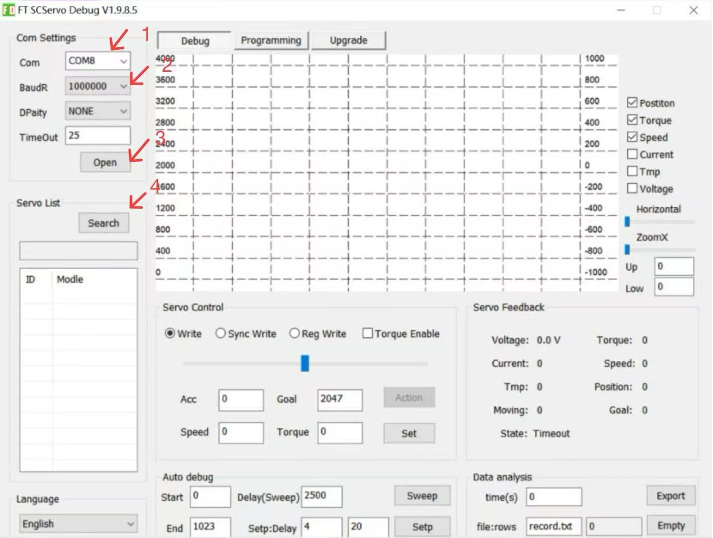
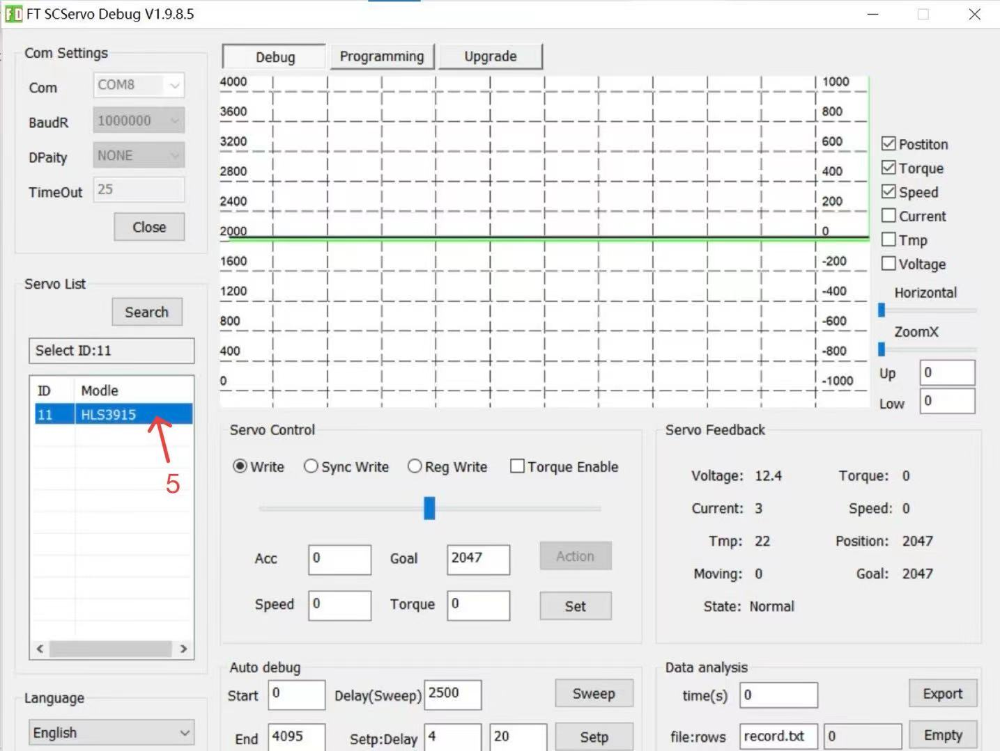
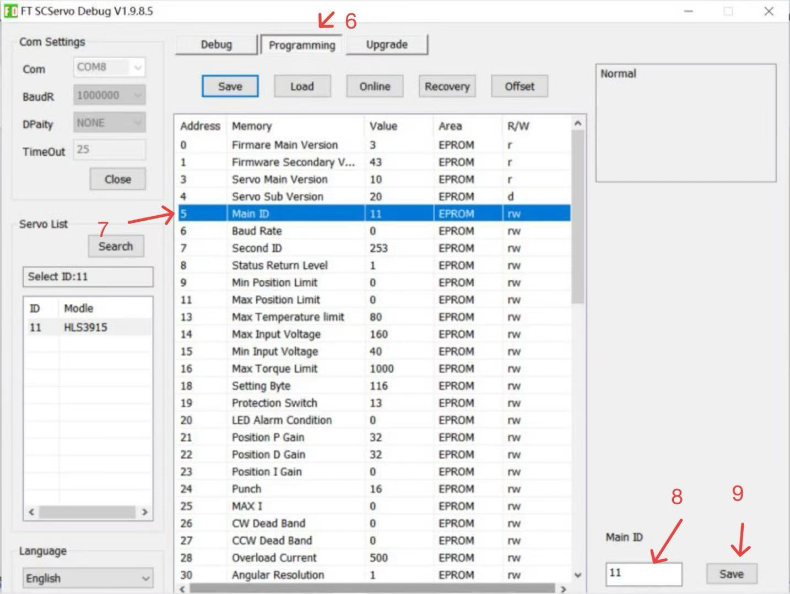
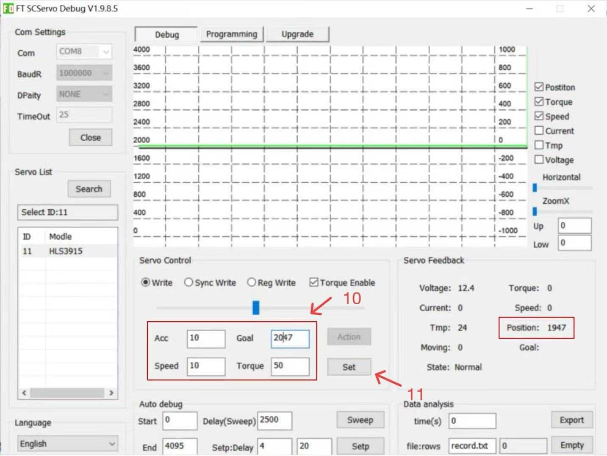
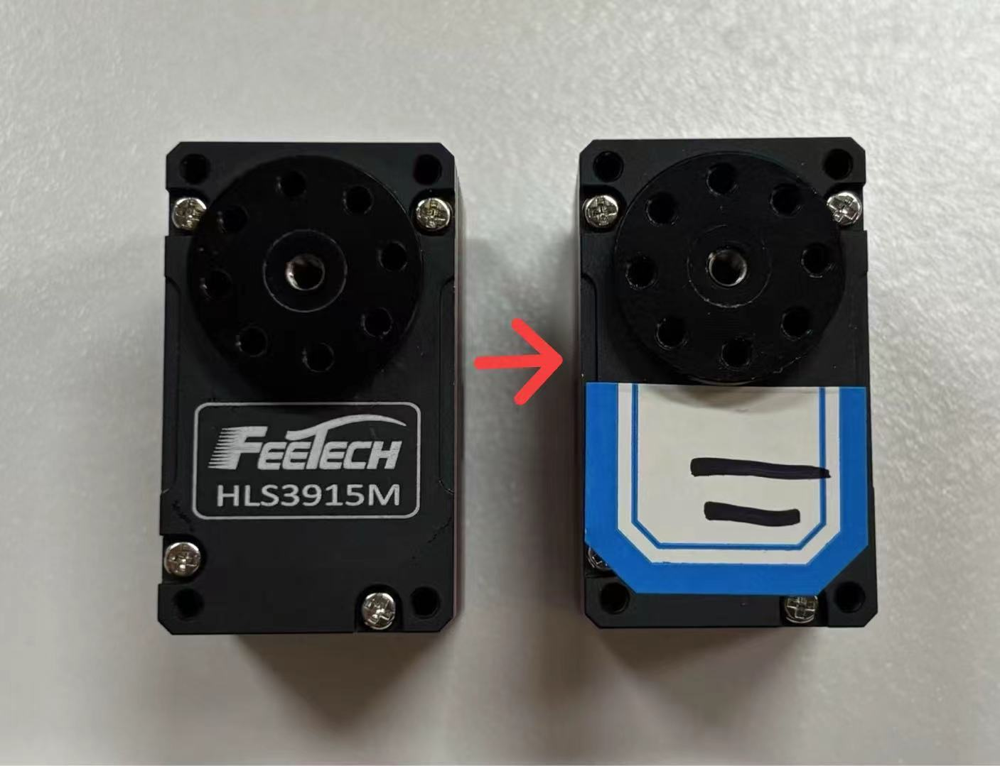
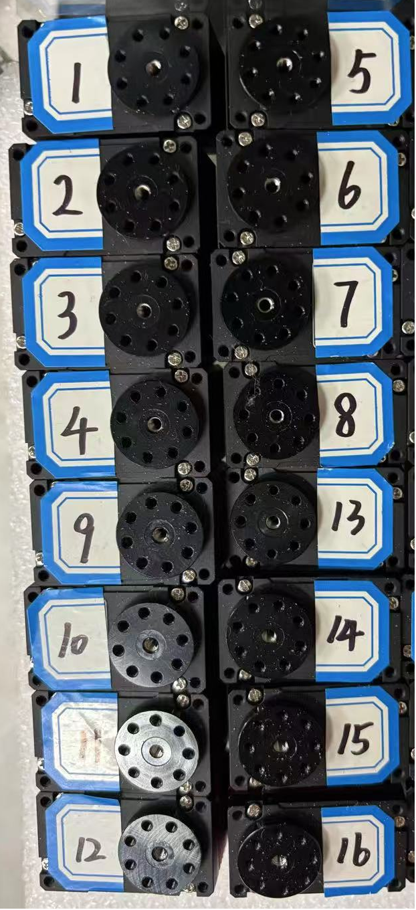

Setting Up Servo
This step focuses on setting up servo. Follow the figure sequence carefully and use the first image as your starting reference. install FEETECH Debug Software for debugging.
Before you move on
Do not force mating parts. If alignment resists, back up and compare with the previous image. Double-check polarity and connector seating before any powered test.

Figure 1.1: Install FD

Figure 1.2: Connect the servo to your computer
Connect each servo one by one to the computer via the URT-1 debugging board, and connect the URT-1 debugging board to a power source.

Figure 1.3
Connection demonstration

Figure 1.4: Search for the servo
Open the FD debugging software, select Com as the serial port number of the servo (you can determine this by observing the newly added serial port number when you plug in the USB cable), select the BaudR as 1000000, and then click Open and Search.

Figure 1.5: Select the servo
After finding the servo, you need to click to select the servo. It will turn blue when selected.

Figure 1.6: Number the servo
After selecting the servo, click Programming, select Main ID, and then number the servo from 1 to 16 in the lower right corner. After finishing, click Save.

Figure 1.7: Reposition the servo
If the Position is not 2047 (center position), set the Goal to 2047, then set a certain Speed, Acc, and Torque, and click Set. After moving the position to 2047, set the Speed, Acc, and Torque to 0, and click Set.

Figure 1.8: Attach physical label
According to the serial number, attach a serial number label to the front of each servo (the side with the trademark).

Figure 1.9
The final label orientation is recommended to be as shown in the Figure 1.9.
Step-by-Step Instructions
Install FD
install FEETECH Debug Software for debugging.
Connect the servo to your computer
Connect each servo one by one to the computer via the URT-1 debugging board, and connect the URT-1 debugging board to a power source.
Figure 1.3
Connection demonstration
Search for the servo
Open the FD debugging software, select Com as the serial port number of the servo (you can determine this by observing the newly added serial port number when you plug in the USB cable), select the BaudR as 1000000, and then click Open and Search.
Select the servo
After finding the servo, you need to click to select the servo. It will turn blue when selected.
Number the servo
After selecting the servo, click Programming, select Main ID, and then number the servo from 1 to 16 in the lower right corner. After finishing, click Save.
Suggested Tools
What To Have Ready
Step Notes
Setting Up Servo Note: Dry-fit parts first and only tighten to final torque after alignment looks correct.
Setting Up Servo Note: Disconnect power during fitting and re-check connector orientation before any test.
Setting Up Servo Note: Use the last figure on the page as a verification target before you continue.
Setting Up Servo Note: If something feels forced, stop and compare part orientation with the previous figure again.
Reference and Updates
Step 20 currently uses image-led instructions
No dedicated embedded video is linked on this page yet.
For project updates, release notes, and future supporting material, visit the author homepage.
Yunqi Zhong